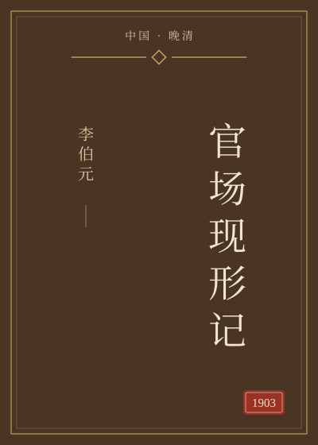
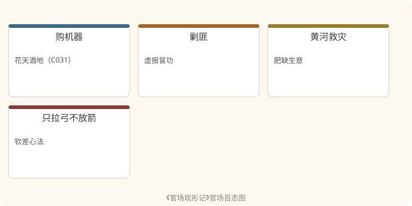

官场现形记
一、基本信息
| 作者 | 李伯元 |
|---|---|
| 成书/出版 | 1903—1905年连载于《世界繁华报》（中国作家网 C031） 重读《官场现形记》：未完成的晚清官场百科全书（中国作家网转载《名作欣赏》）（官方文学机构） |
| 国别/地区 | 中国 |
| 时代 | 近代 · 晚清 |
| 体裁 | 章回小说（谴责小说） |
| 语言 | 汉语（白话·章回体） |

《官场现形记》官场百态图（主题·结构图）
二、创作背景
中国作家网（C031）：李伯元'1867—1906'、'字宝嘉，别号南亭亭长。江苏武进人'；'1897年，30岁的李伯元来到上海创办《指南报》，后来改办成《游戏报》'。
连载：'1903—1905年，《官场现形记》六十回开始连载发表于《世界繁华报》'；初版本'一共两卷，各30回'（C031）。
鲁迅定评（C031 转引）：'虽命意在于匡世，似与讽刺小说同伦，而辞气浮露，笔无藏锋，甚且过甚其辞，以合时人嗜好……故别谓之谴责小说。'
三、内容脉络
官员群像举要（C031）：陶子尧购机器的花天酒地、剿匪虚报冒功、钦差'只拉弓，不放箭'、黄河救灾肥缺、十二姨太打蚊子求官等。
上卷讲官场科举经贸军事吏治，下卷写赈灾捐款慈善交接制度与外交（C031）。
四、主要人物表
| 人物 | 身份 | 说明 |
|---|---|---|
| 陶子尧 | 候补官员 | 购机器闹剧（C031） |
| 傅钦差 | 钦差 | 清廉表演（C031） |
| 童子良 | 总署大员 | 拒银元点银票（C031） |
五、主题与艺术特点
- 官场的全方位'现形'（C031：官场百科全书）。
- '谴责小说'与讽刺传统的分野（C031 转引鲁迅）。
- 报刊连载与批评的互动（C031：慈禧索问轶事——顾颉刚引）。
六、影响与评论
- 中国作家网：鲁迅'故别谓之谴责小说'的命名（C031 转引）。
重读《官场现形记》：未完成的晚清官场百科全书（中国作家网转载《名作欣赏》）（官方文学机构） - 中国作家网：胡适以之与《儒林外史》对比——'近世做谴责小说的人大都是失意的文人'（C031 转引）。
重读《官场现形记》：未完成的晚清官场百科全书（中国作家网转载《名作欣赏》）（官方文学机构）
七、阅读建议
难点
- 晚清官制与捐纳制度注释。
- 六十回的群像结构——先画官阶表。
- 《官场现形记》（人民文学出版社，通说待核）。
与《儒林外史》《老残游记》合读：晚清—近代讽刺三部曲。
八、待核实
- 五编六十回的分编出版细节核对。
- '四大谴责小说'总名出处待核。
- 李宝嘉/李伯元写法辨析待核。
本页主要来源
李伯元的其他收录作品：官场现形记